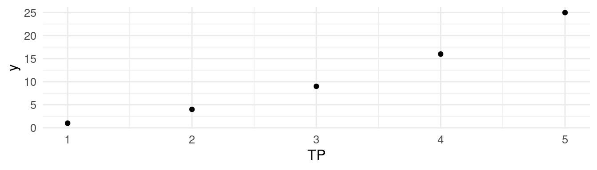
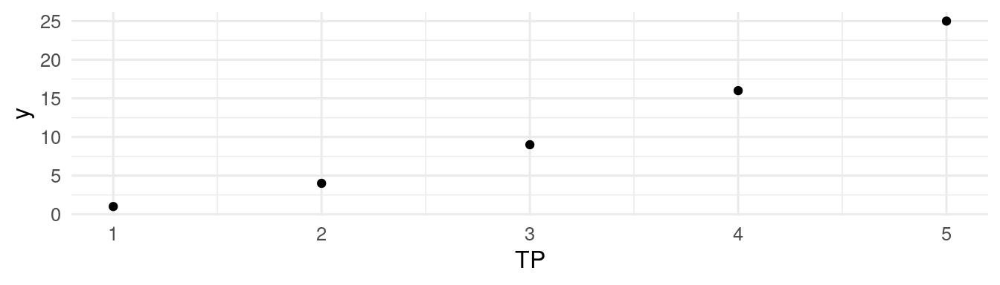
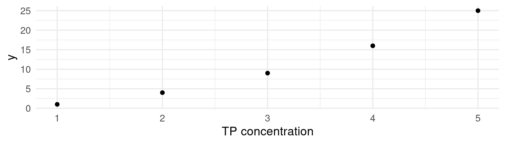
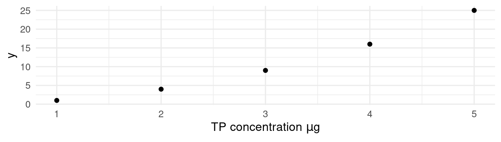
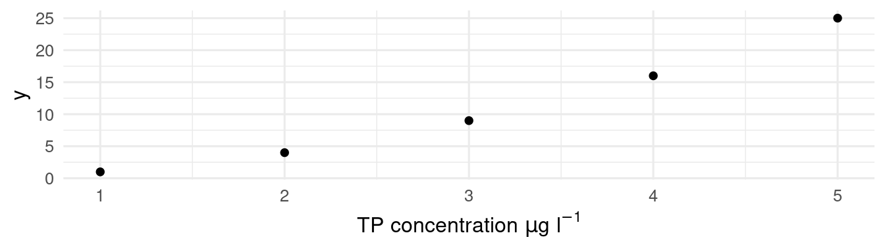
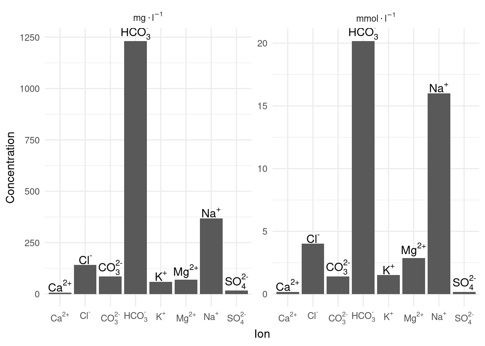

# sample data
dat <- tibble(x = 1:5, y = x^2)
# base plot
g <- ggplot(dat, aes(x = x, y = y)) +
geom_point()
g + labs(x = expression(TP))


When making a publication ready plot, we often need to use special characters and mathematical notation for the axes and other labels.
The functions expression() and bquote() are powerful tools for annotating figures with mathematical notation in R. This functionality is not immediately obvious from their respective help files. demo(plotmath) and ?plotmath show the huge potential of expression(), but do not have many examples relevant to biologists with graphs to label.
Expressions are comprised of symbols. The expression \(TP ~ concentration ~\mu g~l^{-1}\) includes the symbols \(TP\), \(concentration\), \(\mu\), \(g\), \(l\), and \(^{-1}\). In this chapter, you will learn how to generate these symbols and combine them with expression().
The key to getting expressions to work is to start with something simple, test it and edit until it works, then add the next symbol and repeat. This is the approach we are going to use here.
expression()
We are going to use expression() with labs(), but the same expressions can be used with some other functions that write text on a plot (including base plots). Other functions take a slightly different approach (see section on parsing below).
The simplest use of expression is take a symbol that is a single word or number.
# sample data
dat <- tibble(x = 1:5, y = x^2)
# base plot
g <- ggplot(dat, aes(x = x, y = y)) +
geom_point()
g + labs(x = expression(TP))
Notice that expression() does not require quote marks except to enclose spaces or punctuation. This first example of expression() is entirely pointless except as a starting point for something more complex.
If we want two symbols with a space between them, we need to separate them with a tilde ~. If we don’t want a space, we can separate symbols with * (if you actually want a *, use %*%).
g + labs(x = expression(TP~concentration))
Some symbols have special meanings, for example, to get a Greek letter, write its name in lower case. Capitalise the first letter to get an upper-case Greek letter. If for some reason you want to have “beta” written on your plot, it must be in quotes.
g + labs(x = expression(TP~concentration~mu*g))
Subscript or superscript can be added to a string using ^ and [] notation respectively. If you want more than one symbol to be in superscript, you need to enclose them in braces {}.
g + labs(x = expression(TP~concentration~mu*g~l^-1))
To start an expression() with a superscript (or subscript), put "" first.
g + labs(x = expression(""^14*C~years~BP))| What | How | Output |
|---|---|---|
| Lower-case Greek letters | delta | $$\delta$$ |
| Upper-Case Greek Letters | Delta | $$\Delta$$ |
| Subscript | CO[2] | $$CO_{2}$$ |
| Superscript | m^-2 | $$m^{-2}$$ |
| Italics | italic(Navicula) | $$Navicula$$ |
If you already have the expression as a string, you can use str2expression() (or parse() with the text argument) to convert it into an expression.
lab <- "Wind~speed~m~s^-1"
str2expression(lab)expression(Wind ~ speed ~ m ~ s^-1)ggplot(dat, aes(x = x, y = y)) +
geom_point() +
labs(x = expression(Area~m^2))ggplot(dat, aes(x = x, y = y)) +
geom_point() +
labs(x = expression(Flux~g~m^-2~yr^-1))ggplot(dat, aes(x = x, y = y)) +
geom_point() +
labs(x = expression(delta^15*N))ggplot(dat, aes(x = x, y = y)) +
geom_point() +
labs(x = expression(italic(Aulacoseira~granulata)~var.~italic(angustissima)))Some functions such as geom_text(), facet_wrap() and scale_x_discrete() do not accept expressions directly. Instead, they parse a string and convert it to an expression. Each function does this a different way! Usually it helps to use mutate() to add columns with the parsable labels if necessary. Here is a minimal example that adds subscripts and superscripts to text, axis labels and facet strips.
# collate data
dat <- tibble(
species = c("Na+", "K+", "Ca2+", "Mg2+", "Cl-", "SO42-", "HCO3-", "CO32-"),
conc = c(368, 59, 7, 70, 142, 17, 1231, 85),
mol_mass = c(
22.99, 39.10, 40.08, 24.31, 35.45, 96.06, 61.02, 60.01
),
moles = conc/mol_mass
) |>
select(-mol_mass) |>
pivot_longer(cols = c(conc, moles), names_to = "unit", values_to = "value")
# add a column that can be parsed as formatted labels
dat <- dat |>
mutate(labels = case_match(species,
"Na+" ~ "Na^'+'",
"K+" ~ "K^'+'",
"Ca2+" ~ "Ca^{2*'+'}",
"Mg2+" ~ "Mg^{2*'+'}",
"Cl-" ~ "Cl^'-'",
"SO42-" ~ "SO[4]^{2*'-'}",
"HCO3-" ~ "HCO[3]^'-'",
"CO32-" ~ "CO[3]^{2*'-'}"
)) |>
# convert into factor to ensure plotting order
mutate(labels = factor(labels)) |>
# make units column parsable as expression
mutate(unit = case_match(unit,
"conc" ~ "mg %.% l^{-1}",
"moles" ~ "mmol %.% l^{-1}"
))
ggplot(dat, aes(x = labels, y = value)) +
geom_col() +
# use parse argument in geom_text()
geom_text(aes(label = labels),
parse = TRUE,
vjust = -0.1 # move text up slightly
) +
# use parse function to make expressions for scale_x_discrete()
scale_x_discrete(labels = parse(text = levels(dat$labels))) +
# use labeller argument in facet_wrap to parse strip labels
facet_wrap(vars(unit), labeller = "label_parsed", scale = "free_y") +
labs(x = "Ion", y = "Concentration") 
Expressions, are quite tricky to get right.
Here are some examples of errors and how to interpret them.
expression(Wind speed m%.%s^-1)Error in parse(text = input): <text>:1:17: unexpected symbol
1: expression(Wind speed
^You cannot have spaces in expressions unless you quote them. You can use a ~ instead of a space.
expression(Wind~speed~m%.%s^-1)expression(Wind ~ speed ~ m %.% s^-1)# or
expression("Wind speed m"%.%s^-1)expression("Wind speed m" %.% s^-1)expression(Ca^2+)Error in parse(text = input): <text>:1:17: unexpected ')'
1: expression(Ca^2+)
^The + is a mathematical symbol that expects another symbol after it. To make it work here, quote the + or the 2+.
expression(italic(Betula~nana)~%)Error in parse(text = input): <text>:1:32: unexpected input
1: expression(italic(Betula~nana)~%)
^The % is a special character, so it need to be quoted.
expression(italic(Betula~nana)~'%')expression(italic(Betula ~ nana) ~ "%")Fix the following broken expressions
No spaces allowed in expressions. Quote or replace spaces with ~.
Be careful with spelling! italic not italics.
bquote() (or label_bquote() for facet labels) can be useful if you want to include an R object in the expression.demo(plotmath) and ?plotmath are very useful once you have understood the basics.plotmath but can be included using unicode. For example a per mil symbol (‰) - \u2030
latex2exp::TeX.If you understand these examples, you should be able to use the remainder of the functionality demonstrated by demo(plotmath) and at ?plotmath.